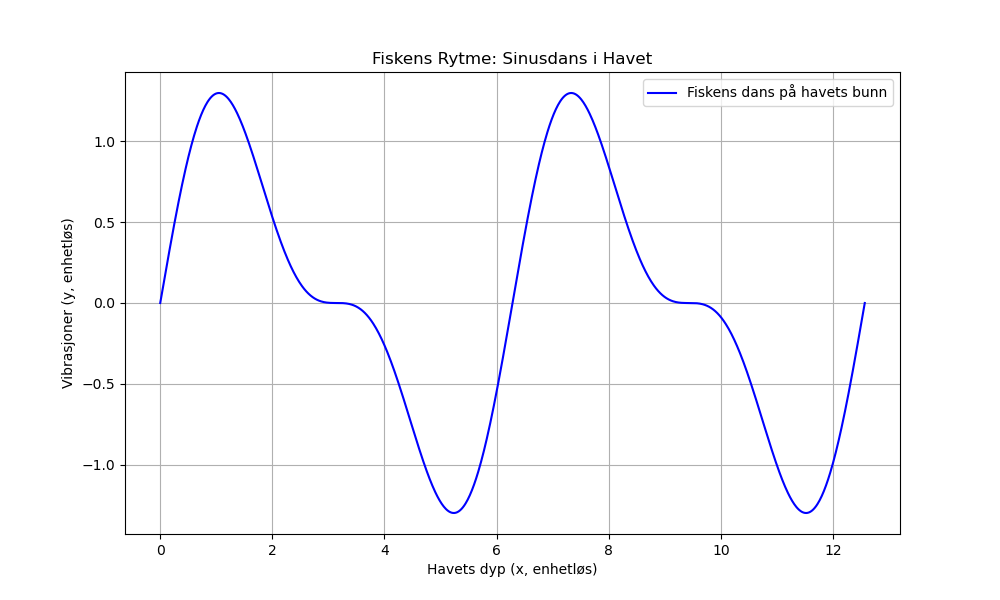

Dagens dikt
En fisk som danser på havets bunn,
Blå som himmelen og lys som solens glimt,
Skattejakten er dens evige grunn,
Vibrasjoner i vann—et evig hint.
En rytme i bølgen, en sinusdans,
Livets spor i havets balanse.
Dette diktet beskriver en sinuskurve som vibrasjoner på havets bunn: En matematisk rytme som representerer fiskens dans.

Kode
import numpy as np
import matplotlib.pyplot as plt
# Parametere for sinuskurven
x = np.linspace(0, 4 * np.pi, 1000) # Et intervall som representerer "havets bunn"
y = np.sin(x) + 0.5 * np.sin(2 * x) # En kompleks form for fiskens dans som kombinerer grunnkurtve og harmonikk
# Plotter sinuskurven
plt.figure(figsize=(10, 6))
plt.plot(x, y, label="Fiskens dans på havets bunn", color="blue")
# Legge til informasjon
plt.title("Fiskens Rytme: Sinusdans i Havet")
plt.xlabel("Havets dyp (x, enhetløs)")
plt.ylabel("Vibrasjoner (y, enhetløs)")
plt.legend()
plt.grid()
# Vis plott
plt.savefig('2025-03-20-19-52-47.png')